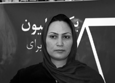
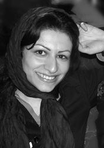
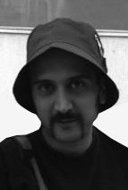
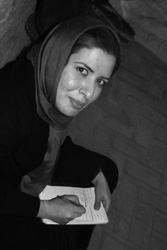
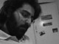

پذيرش > تریبون > گزارش كمپين > آسیب ها و پیشرفتها در کمیته آموزش کمپین
 میزگردی با اعضا کمیته آموزش میزگردی با اعضا کمیته آموزش

 آسیب ها و پیشرفتها در کمیته آموزش کمپین آسیب ها و پیشرفتها در کمیته آموزش کمپین
2 دی 1387 - - نسخه قابل چاپ
یک خاطره بین اکثر کمپینی ها مشترک است، روز اول : کارگاه آموزشی کمپین! دو یا سه نفر از کمپینی ها با فلیپ چارت ها و دفترچه ها و بیانیه کمپین در جمع حاضر می شوند و به نوبت بحث های مختلف را طرح می کنند. این تسهیل گران در روزهای کارگاه خود را از راههای دور و نزدیک به محل می رسانند و برای داوطلبان جدید از طرح کمپین، موارد حقوقی طرح شده در آن و مهارتهای ارتباط گیری با مخاطب برای گرفتن امضا می گویند. کمیته آموزش کمپین در تهران یکی از اصلی ترین و البته ابتدایی ترین کمیته ها ست. هدف کمپین که جمع آوری امضا حین آگاهی بخشیدن به مخاطبان و داوطلبان جمع آوری امضاست یکی از مهم ترین دلایل تشکیل آن بوده است. این کمیته در دو سال و نیم گذشته از شروع به کار کمپین فراز و نشیب هایی را پشت سر گذاشته است و هنوز به کار خود ادامه می دهد. تسهیل گران آن که خود روزی به عنوان داوطلب در یکی از همین کارگاهها حضور داشته اند، نه تنها در تهران که در هر جای ایران اگر در خواستی برای برگزاری کارگاه باشد حضور می یابند و با کار داوطلبانه خود هدف کمپین مبنی بر آگاهی رسانی را تحقق می بخشند، درآستانه سال سوم کمپین گفتگویی داشتیم با تعدادی از این دوستان که انتشار آن تا امروز به تعویق افتاد.
مریم حسين خواه : فکر مي کنم کمیته آموزش یکی از کمیته هایی بود که از اول کمپین کار خود را شروع کرد درست است؟

زهره ارزني : شاید اگر بگوييم که این میزگرد مصادف شده با اولین کارگاه کمپین یک میلیون امضا در دو سال پیش بیراه نگفته ايم. همان زمانيکه طرح کمپين مطرح شد و توسط فعالان زن بررسي شد و بيانيه و دفترچه يعني همان سه سند کمپين آماده شد، قبل از پنج شهريور بود، و همان زمان ما کارگاهي در کتابخانه صديقه دولت آبادي برگزار کرديم و در آن کارگاه خانم انتصاري طرح را گفتند، خانم مقدم مهارتها را و من هم قسمت حقوقي را گفتم . در این جلسه اولين امضا کنندگان کمپين حضور داشتند. جا خيلي کوچک بود و شرکت کنندگان به راحتي جا نمي شدند، اما به هرحال بر گزار شد. ما اسم کارگاه را روي اين جلسات آموزشي گذاشتيم ولي در واقع اصلا کارگاه نيست چيزي بين کارگاه و يک کلاس آموزشي است. خوب اگر مي خواستيم واقعا کارگاه برگزار کنيم براي اين همه مطلب بايد حداقل دو روز وقت مي گذاشتيم .فقط بخش حقوقي به نظر من سه روز وقت مي بره اگر واقعا با ديد تسهيل گري بخواهيم نگاه کنيم . ولي ما محدوديت هاي زيادي داشتيم اول از همه جاي مشخص نداريم ، امکان مادي نداريم مثلا براي پذيرايي. هر بار کارگاه در جايي برگزار شده و پذيرايي هم به عهده صاحبخانه است.
پس اولين کارگاه در واقع قبل از اعلام موجوديت کمپين بود، شايد بشود بگوييم اولين کميته . البته آن زمان اسم کميته به اين شکل روي فعاليتها نبود ولي سر اين موضوع که بايد داوطلبان کمپين آموزش بينند توافق داشتيم همگي . حالا اين که چه مواردي در آموزشهاي اوليه گنجانده شود يک آشنايي مقدماتي بود با کمپين و بعد هم چون هدف اصلي کمپين تغيير قوانين هست يک بخش حقوقي هم گذاشتيم چون چيزي که در دفترچه آمده بود خيلي مختصر بود و نياز به توضيحات خيلي بيشتري بود و بعد هم مهارت ارتباط گرفتن با مردم بود که آن هم يکي از اصول کمپين يعني همان آموزش چهره به چهره است که خانم مقدم در آن مهارت داشتند و آن جزوه با همکاري چند نفر از دوستان آماده شد و اولين کارگاه کمپين تشکيل شد.
مریم حسين خواه : درحقیقت میشود گفت همه بچه ها حتی همان تیم اولیه هم این دوره کارگاه رو گذراندند.
زهره ارزني : دقیقاً. حتی من تعجب می کنم وقتي بعضي از بچه مي گويند که ما کارگاه نگذرانديم ، چون در همان کارگاه اوليه همه بودند.. اولین کارگاه برای خود بچه ها برگزار شد. و بچه هایی که اولین امضاهای کمپين را داشتند عملا اين کارگاه را براي خودشان برگزار کردند. و جالب اين بود که در همان کارگاه ایرادات ما را میگفتند. کجا باید بیشتر تاکید کنیم. به چه جیزی باید بیشتر تاکید کنیم. هم در طرح هم در مهارتها... خیلی خوب بود و خيلي از ايرادات اوليه در همان کارگاه برطرف شد. ونکته جالب ديگر این است که این کارگاه کارگاهی بود که تخصص گرایی را کنار گذاشت. بچه هایی که خودشان آمدند و علاقه به شرکت در کارگاهها داشتند بعد سه چهار ماه عملاً خودشان شدند آموزشگر. به نظرم کميته آموزش کمترين انحصار گری را داشته چون همیشه پذيراي کساني بوده که مي خواستند وارد کميته شوند و به عنوان آموزشگر کار کنند.
مریم حسين خواه : اتفاقاً همین را می خواستم بپرسم که این انتخاب آموزش گران چطور بوده. حالا مثلاً بچه هایی که اولین آموزشگرها بودند.
سمیه رشيدي: یک سری از بچه ها که خوب مثل زهره جان و خدیجه مقدم و شهلا انتصاری و رضوان مقدم که از همان اول جزء آموزشگران بودندقبلاً فعال ان جی او ای بودند خوب کارگاه را گذرانده بودند و خودشان هم قبلن تجربه برگزاري کارگاه را داشتند . یک روال هم این بود که ما هر کارگاهی رو که میگذراندیم آخر کارگاه اعلام مي کنيم چه کسی دوست داره کدوم یکی از کمیته های کمپين بپيونده و خوب يکي از کميته هايي هم که اعلام مي کنيم همين کميته آموزش هست و توضيح مي دهيم که چه کاري در اين کميته انجام مي شود ببینید در بعضي از کارگاه ها بچه هایی هستند که میگويند ما حقوق خوانديم یا اینکه بدون هیچ سابقه قبلی فقط به خاطر علاقه مي خواهند وارد کميته آموزش بشوند یا اینکه خود آموزشگر در کارگاه ها بچه هايي را مي بيند که فن بیان خوبي دارند ويا اطلاعاتشان بالاست خودشان پیشنهاد می دهد و مثلا از اومي خواهد که در کميته آموزش فعاليت کند خوب روال اینطور می شود که یکی دو تا کارگاه فرد می آيدو بعد خودش میتواند این کار را بکند.
مریم حسين خواه : یعنی دوره ای که مخصوص تسهیلگران باشد برگزار نمی کنید؟
سمیه رشيدي :تقریبا میشود گفت که قسمت حقوقی است که با زهره هماهنگ میشود ولی معمولاً روال این هست که چون قسمت مهارتها و طرح آماده هست این متن ها را می دهیم فرد میخواند و بعد وارد کمپین میشود و دوا کارگاه میگذراند بعد هم خودش باید یک جستجوی اطلاعاتی بکند. در مورد سوالاتي که در کارگاه ها معمولاً متداول است و سوال می کنند باید بداند . ولی در کل نه، آموزش آنچنانی که کارگاه بخصوصي براي تسهيل گران باشد نداريم

نازلی فرخي : یک توضیحی بدهم. براي اینکه تسهیل گران واقعا بتوانند تسهیلگر باشند ما گاهی وقتها شرایط تحمیلی داریم، خوب تسهیل گر نداریم خیلی وقتها بچه ها گیر می افتند و مجبورند براي يک کارگاه به عنوان تسهيل گر بروند. ولی خوب تاکید ما براین هست که کساني باشند که سابقه فعالیت در کمپين را داشته باشند. و امضا جمع کرده باشند. مثلاً وقتي بخش مهارتها را می خواهیم بگوييم دقیقاً شاید شصت درصد مطالب را اگر با آن درگير نبوده باشيم نمیتوانيم بگوييم و کسی که در کارگاه باشه حرفها را نمي تواند بفهمددر قسمت طرح که کمیته ها رو مطرح میکنیم و کمپین را معرفی می کنیم اگر کسي باشد که در کمپين کار نکرده باشد و با خود کمپین درگیر نباشد نمیتواند زیاد چیزی بگويد يا به سوالات پاسخ دهد.
مریم حسين خواه :قسمت حقوقی را اوایل فقط حقوق دانان می گفتند؟
نازلی فرخي: دقیقاً.
زهره ارزني : من اين را به حرف بچه ها اضافه کنم . چون این بخش (حقوقي) تخصصی و فني هست چون زبان حقوقی زبان تخصصی است و زبان کوچه و بازار نیست، می خواستند زبان حقوقی را مثل زبان کوچه بازار بکنند. این یک حسن دارد و يک ايراد . حسنش این هست که جامعه راحت تر می تواند مطالب حقوقی را بخواند ایرادش این هست که این جملات حقوقی، خودش می تواند گستردگي و تفسير را در خودش داشته باشد که به اين شکل اين کارکرد را از دست مي دهد و ممکن است موجب اشتباه شود. . اوايل اعتقاد بر این بود که وکلا بخش حقوقي را بگويند بچه های وکيل یک کار تجربی هم کنارتسهيل گري دارند مثال ها را راحت تر می توانند بزنند برای این بیشتر می توانند کمک کنند. گرچه من من خودم اعتقادم بر این بود که خیلی از بچه هایی که در مسایل زنان کار کردند و علاقه نشان مي دهند می توانند اين بخش را بگويند. ولی نظر غالبمان این بود که بچه های وکيل باشند اوایل هم وکلا خیلی خوب همکاري کردند. سرکار خانم هومستی بود ، خانم مغزی بود خانم نازنین کیانی بود که با این حساب در 9 ماه اول مشکلی در اين بخش نبود ولی بعداز آن این بچه ها به هر طریقی حضورشان کم شد خانم جعفری بعداً اضافه شد.به تدريج افرادي براي اين بخش آمدند که وکيل نبودند و به دليل تجربه يا علاقه اين بخش را مي گفتند مثلا در کميته پسران آقاي عبدي اين بخش را بر عهده داشت که حقوق نخوانده ولي از عهده اين کار برآمده ..يا مثلا مواقعي که اضطراراً این کار بشود. مثلاً در کرمانشاه که بچه ها رفته بودند مثل اینکه نازلی نتوانسته بود برود . بعد شهلا انتصاری مجبور شده بود انجا قسمت حقوقي را بگويد. ما عملاً فهمیدیم که می شود اینکار را کرد.ولي من نظرم اين هست که اگر بحث تخصصي بشود ممکن است اين بچه ها نتوانند و بهتر است وکلا اين بخش را بر عهده داشته باشند..
مریم حسين خواه : شما مثل اینکه چند وقت پیش یک دوره یا کلاس حقوقی کوچک برای بچه هایی که می خواستند بخش حقوقی را بگويند داشتید و مثلا می گفتیم که بیايند دفتر شما و چند ساعت قبلش با هم حرف بزنند....
زهره ارزني : الان چون تعداد کارگاه ها کم شده من هم نظرم این هست که بیایيم یک دوره کارگاه های مخصوص براي کساني مي خواهند کار تسهيل گري کنند داشته باشيم و تخصصي تر به اين موضوع بپرازيم و با سوال و جواب هاي مناسب به نتيجه اي که مي خواهيم برسيم .
مریم حسين خواه : راجع به شیوه کارگاه ها که صحبت شد، گویا بچه های کمیته پسران شيوه هاي متفاوتي در برگزاري کارگاهها دارند . اينطور که من فهمیدم بخش آموزش کمیته پسران و کمیته آموزش کمپین تهران یک همکاری مشترکي داشته اند . حالا اگر ممکن هست يک مقدار پسرا ن در مورد نوع کارگاهها و شيوه هايي که دارند توضيح بدهند.

یاشار گرمستاني : ازاول تشکيل کميته پسران به خاطر مسائل امنيتي قرار شد در مواردي که ممکن هست مشکلي پيش بياد مثل کارگاهها تفکيک کنيم ولي قبلش اين طور نبود... من خودم در کارگاه مختلط بودم. ولی بعدها موقعیت هایی پیش آمد که کارگاههايي به صورت مختلط برگزار شد مثلا کارگاه کرج مختلط برگزار شد.
بنابراين ما خودمان در کميته پسران یک مقدار آزادی عمل داشتیم چون مستقلاً کارگاه برگزار میکردیم. چیزی که ديده مي شد اين بود که کارگاهها خيلي خسته کننده است . يک يا سه نفر همش مونولوگ مي گويند آن هم پنج ساعت .. این بود که تصميم گرفتيم کمي مشارکتي تر برگزار کنيم و سعي کنيم شرکت کننده ها را بيشتر مشارکت بدهيم چند جلسه با هم داشتيم در اين مورد که چطور مي شود اين کار را پيش برد يعني پروسه را کارگاهي تر کرد .. در نهایت اینجوری شد که بخش طرح، معرفی کمپین همانطور ماند و یک نفر میاد مونولوگ اين بخش را توضيح مي دهد. ولی در قسمت حقوق و مهارتها خیلی کارگاهی تر شد. مثلا اینطور بود که بخش حقوقی را وکیل کمپین توضیح میداد برای افراد.بعد 10 قانون را به سه بخش تقسيم کرديم .یک چهار تا و دو تا سه تا . که حالا قانونهايي که شباهت بيشتري به هم داشتند را در يک گروه گذاشتيم . ازدواج و طلاق و ولایت فرزندان و تعدد زوجات با هم هستند . ارث و دیه و شهادت با هم و بقيه هم در با هم در يک گروه ديگر. و خوب هر کدوم از اینهارا میداديم به یک گروه. قبلاً شرکت کننده ها را سه گروه می کردیم و یک سری سوال درباره این قوانين می پرسیدیم. یکیش توضیح دادن خود قانون هست . دفترچه را دادیم و خوب می تواننداز داخل دفترچه بخوانند و بفهمند که خود قانون چي هست . و توضیح بدهند که آیا این ریشه اجتماعی دارد يا نه ؟ یک چیزی که نبود و خوب ما اضافه کردیم این بود که چه تاثیری این قوانین روی زندگی مردان مي تواند داشته باشد. سعی میکنیم یک جور هايي غیر مستقیم این را از خودشان بپرسيم که ببینیم چطور خودشا ن متضرر میشوند در این جریانات. حالا خودشان بعداً به عنوان تسهیلگر توضیح میدهند . و خوب هر کدام از گروه ها مسول توضیح دادن قانونها و جواب دادن به سوالات میشدند و خوب یک بحثی هم میشود و بعدش که توضیح دادند تسهیلگر می آيد و تسهیل می کند و چيزهايي را که اشتباه گفته اند اصلاح مي کند و يا چيزهايي را که ضعيف گفته اند تاکيد مي کند دوباره .
مریم حسين خواه : این شیوه کارگاه را از چه وقتی اجرا کردید؟
یاشارگرمستاني : نصفه کارگاه ها. الان خیلی وقت هست که به این شیوه عمل می کنیم .
مریم حسين خواه : آيا این روش در کمیته آموزش هم اجرا شده است یا اینکه تا حالا هنوزاجرا نشده ؟منظورم در کارگاههاي زنان است ؟.
محمد شوراب : یک چیزی هم من در اين باره به حرفهاي ياشار اضافه کنم ،. یکی از دلایلی هم کارگاه تغییر کرد به این شکل اين بود که بچه ها با هم صمیمتشون بیشتر بشود و بیشتر فعالیت کنند. یک سری ازداوطلباني که بعد از کارگاه مي آمدند در کمیته پسران فعالیت کنند خیلی کم شده بود. کارگاهی که مثلاً من خودم آمدم 15 نفر بودند یک نفر من بودم که ماندگار شدم . ولی بعد ازاينکه شکلش عوض شد مثلاً کارگاه سیاوش اینها ، ارش بود و سه چهار نفر دیگر هم فعال شدند.
مریم حسين خواه : مهارتها هم به همین ترتیب بود؟
یاشار گرمستانی : مهارتها فرق میکند. سه مقدمه سناریو داریم. سه سناریوی ممکن درمورد امضا گرفتن. یکی یک ادم مردسالاره.... خیلی مردانه روبرو ميشود . یکي که با یک آدم مذهبی روبرو میشود و ديگري با یک آدم ترسو. و هر کدام از این مقدمه سناریو ها رو میدهيم به یکی از این گروه ها بقیه تئاتر رو خودشان باید بنویسند و خودشا ن هم بازی کنند. و خوب بعدش مي آيند بازی می کنند و ما ایرادهاشون رو از داخل سناريوي بچه ها در میاریم بر اساس چیزی که ما از مهارتها داریم.
نازلی فرخي : ببینيد من از آذر 85 آمدم کمپین. و اون موقع کارگاه ها بیشتر برگزار می شد و ما هفته ای يک کارگاه داشتیم فرصت زیادی بود که تسهیلگرها بیايند در کارگاه ها بنشینند و شیوه تسهیل رو ببینند . الان دیگر ما این فرصت رو نداریم.. من خودم 5 تا کارگاه نشستم تا توانستم تسهیل گر بشوم. من نقد خودم به کمیته آموزش همین بود که چرا ما میگويیم تسهیل گر؟ ما آموزشگریم، شیوه کار ما آموزشگریست . مثلاً در کارگاه هایی که ما بودیم حداقل مشارکت شرکت کننده را داشتیم. و معمولاً بیشتر مونولوگ بود. فقط یک جاهایی مثلاً می گفتیم تجربه ای چیزی دارید یا نه؟ بعد به خصوص درباره طرح و مهارتها که من خودم میگويم. مثلا در خرم آباد شب قبل از برگزاري کارگاه من بودم سارا بود زارا بود جلوه بود منصوره و نفیسه. که نشستیم دور هم گفتیم کارگاه را به شیوه مشارکتی تر برگزار کنیم. بعد همون شبش یک چیزهايي نوشتیم برای طرح و مهارتها که چه طور میشود اینها را مشارکتی تر برگزار کنیم. ما میدانستیم که خیلی از بچه هایی که در کارگاه خرم آباد هستند از کساني هستند که قبلاً امضا جمع کردند سابقه فعالیت دارند. دیدیم که میشود مشارکتی برگزارش کرد.
مریم حسین خواه : چطور به این فکر افتادید که کارگاهها مشارکتی تر باشند؟ روند خاصی داشت ؟
نازلی فرخي : من گفتم بیایيم کمیته آموزش را یک آسیب شناسی بکنیم و شیوه مان را به سمت مشارکتی تر شدن ببریم . یک سری جلسات داشتیم آسیب شناسی کردند اما گزارش نیامد. هنوزهم که هنوزه ما نداریم که تو اون جلسه چه مسائلي مظرح شد . ولی بعد از آن هم من نديدم شيوه تغيير خاصي بکند. من الان هم میگويم اگر قرار بود کارگاه ها مشارکتی هم بشود خود تسهیل گر اینکار را میکرد. اینکه بیایيم یک تصمیم کلی در کمیته آموزش بگیریم که بچه ها بیایند یک شیوه مشارکتی را با هم پیاده کنیم نه! اين طور نبود.
زهره ارزني : اصل مشارکتی را من هم قبول دارم ولی من اعتقادم بر این هست که مدت زمان کارگاه ها را اگر کم کنیم مشارکتی نمی شود برگزار کرد. الان یاشار می گوید در قسمت حقوقی یک سوالاتی را مطرح میکنند. ولی چیزی که در قسمت قوانین تبعیض آمیز باید توضیح داده بشود توضیح داده نمی شود و خيلي چيزها ناگفته باقي مي ماند. کار حقوقی خیلی تخصصی هست . نمیشود با یک نمایش گفت کار حقوق انجام شده. مثلا اصلاً وارد بخش تخصصی حقوق نمیشوند که کجا اذن پدر مطرح میشود. کجا اجازه خروج از کشور مطرح میشود. اینها مهم هستند. من نظرم این هست که قسمت حقوق را نمي توان خيلي مشارکتي برگزار کرد. به نظر من کارگاهها به شکلي هست ديگر جواب نمي دهد ، بهتر است به اين شکل باشد که دو سه نفر دور هم بنشينند و حرف بزنند به هم نزديکتر مي شوند و بازده بهتري هم دارد، در کارگاهها من خانمي ديدم که 120 امضا جمع کرده بود دفترچه را هم خوانده بود ولي باز دوست داشت در کارگاه شرکت کند.چون دوست داشت با جمع باشد.
نازلی فرخي : من با اين نظر که دیگر در مواردي نیازی به کارگاه ها نیست موافق نیستم. مثلاً در کارگاه ها یک دفعه بیست نفر آدمی که قراربوده در بیست ساعت مختلف کارگاه را بگذرانند در يک ساعت يک جا جمع مي شوند و با هم ارتباط مي گيرند مثلا من خودم با کساني که کارگاه را با هم گذرانديم هنوز در ارتباط هستم ، با هم دوست هستيم و... در این کارگاه آخری که من رفتم می خواستم طرح را مشارکتی بگويم. طرح باید 1 ساعت تا 45 دقیقه طول بکشه. وقتی من مشارکتیش کردم 1 ساعت و ربع شد.. خوب من گفتم انگيزه شما برای ورود به کمپین چی هست ؟ خیلی از چیزهایی که ما در کمپین تعریف کردیم در حرفهايي بچه ها مشخص مي شود و در مي آيد. به جای اینکه به آنها دیکته کنیم هدف چه چيزي هست و چه چيزي نيست . یکی از ایرادات کمیته آموزش به نظر من این هست که از دو سال پیش تا حالا ما شیوه اجرايمان همان طوريست که بوده است. به خصوص در بخش طرح و مهارتها. و ما اصلاً فکر نکرديم که خوب حالا دو ساله گذشته ما در سایت خبر رسانی کردیم و تعداد زيادي حامی پیدا کردیم. يک سری چیزهایی رو نباید بگویم و یک سری چیزهای جدید باید بگویم. ما هیچ وقت ننشستیم دور هم راجع به اين موضوع با هم صحبت کنیم. هنوز مثلاً برای طرح همون حرفهای قدیمی را مي گوييم. مثلاً مهارتها یک سری جملات کلیدی دارد. من خودم در کارگاهها مي گويمشان چون خیلی از تسهیلگران وقتی نمی گفتم از من می پرسیدند چرا نگفتی؟. مثلاً در مهارتها میگویم با مردم مهربان برخورد کنید و لبخند بزنید. من خودم وقتی اینهارو میگويمحس می کنم دارم توهین ميیکنم.
مریم حسين خواه : یعنی شما فکر می کنید نیاز به یک بازنگری هم در مواد آموزشی وجود دارد و هم در شیوه آموزشی؟
نازلی فرخی : همینطوره و حالا با این تغییراتی که پسران دادند یا هر تغییراتی که هر تسهیلگری در تسهیلش میدهد و حالا که در دو سالگي کمپین هستیم میشود به قول زهره ببینیم داوطلبان جديد کمپين چه نیازهایی دارند. نیازهای داوطلبان فرق کرده به نسبت زماني که ما این کارگاه ها را طراحی کردیم حالا فکر میکنم داوطلب اینطوری در ابتدای کار نداشتیم . الان فکر میکنم چهار صد داوطلب داریم که با آنها ارتباط داریم و ما این را زماني که برنامه ريزي مي کرديم نمیدانستیم

سمیه رشيدي : سطح داوطلبان هم فرق کرده است . الان داوطلباني مي آيند که فعالیت اجتماعی يا سياسي داشته اند. کمپین را کاملا میشناسند و امضا جمع کردند. همه اطلاع دارند که ما مثلاً زندانی داشتیم.
مریم حسین خواه : برنامه کمیته آموزش برای سال سوم کمپین چیست ؟
زهره ارزنی : بحث شده که برای خود آموزشگرها کارگاهی برگزار کنیم و روش تسهیلگری را پیدا کنیم و نوع کارگاهها را تغییر دهیم
مریم حسین خواه : من چندسوال دیگر هم دارم. یک بخشش این هست که یکی از روشها، اموزش از راه دور هست. همانطور که می دانیم کمیته هنری کمپین با همکاری کمیته آموزش فیلمی تهیه کردند از کارگاههای آموزشی که در تهران و شهرستانها برای داوطلبان توزیع شد ؟ شما فکر می کنید این فیلم چقدر موثر بوده است ؟ چقدر نیاز داوطلبان را پاسخ داده است ؟
زهره ارزنی : شاید مشکل بزرگی که فیلم دارد این هست که در یک کارگاه واقعی گرفته نشده، و این یک کمی حالت تصنعی به کار داده و از طرفی هم واقعا چهار ساعت فیلم خسته کننده هست ، به هرحال اعتقادم این هست که اگر از یک کارگاه واقعی گرفته می شد خیلی بهتر بود ولی خوب زمانی بود که مشکلات امنیتی اجازه این کار را نمی داد
سیاوش خدایی :اشکالش این بود که می خواست حالت کارگاهی باشه. در حالیکه مسایلی که در کارگاه گفته میشود را باید به شکل یک فیلم مستند آموزشی درآورد زمانی که من فیلم را دیدم اولین چیزی که به ذهنم رسید این بود که هیچکس پای این فیلم نمی نشیند. چون از چیزی که داوطلبان می توانند به آن دسترسی داشته باشند ساخته شده . دفترچه به هر حال هست باید به نظر من فیلم طوری ساخته میشد که تفاوت از چیزی که به طور عادی ما میبینیم باشه. کارگاه با حالتی که مجری فقط حرف می زنداصلاً حالت جذابی ندارد برای بیننده. میشد یک فیلم مستند آموزشی ساخت. من خودم هم حاضر بودم به شخصه روی این کار وقت بگذارم.
مریم حسین خواه : چی باعث شد که به این نتیجه رسیدید که نیاز به فیلم آموزشی هست.؟
زهره ارزنی : ببینید رفتن به شهرستانها خیلی مشکل شد. خصوصاً شهرستانها بیشتر بچه ها را برای برگزاری یک کارگاه جمع می کردند بعد یک دفعه زدنگ میزدند و می گفتند کارگاه کنسل شد. برای اینکه مسایل امنیتی شهرستانها با تهران متفاوت بود. برای همین گفتند خوب فیلم بسازیم. اول که می خواستند صدا را ضبط کنند. بعد بالاخره تصمیم بر این شد که فیلم بسازند
مریم حسین خواه: این تصمیم کمیته آموزش نبود یعنی؟
نازلی فرخی : از ما حتی نظر خواهی هم نشد.
سمیه رشیدی: یکی از آسیب های اول کمیته آموزش همین بود.
نازلی فرخی : خیلی از بچه های کمیته آموزش نمی دانستند که قرارهست چنین فیلمی ساخته بشه. وقتی فیلم آماده شد بچه های آموزش فهمیدند. مثلاً درمورد تسهیلگرانی که قرار بود در فیلم باشند از کمیته اموزش نظر خواهی نشد. حالا اصلاً بحثی رو این نبود که تسهیلگران خوب بودند یا نه؟. ولی خوب به هر حال باید احترام می گذاشتند ..
مریم حسین خواه : سوال دیگرم این هست که زهره جان بحث شهرستانها رو مطرح کردند می خواستم بدانم کمیته آموزش تا به حال در چند شهر کارگاه آموزشی برگزار کرده ؟
زهره ارزنی : شهرهایی که رفتیم زیاد بوده ولی تا جایی که من به یاد می آورم : گرگان بوده، یزد بود، رشت، کرمانشاه،همدان، اصفهان، مشهد، خرم اباد، تبریز، شیراز
مریم حسین خواه : یعنی الان شیوه کار اینطور هست که هر شهری که می خواهد فعال شود اول یک کارگاه برگزار میشود یا اینکه یک مدت کار می کنند بعد کارگاه برگزار میشود
نازلی فرخی :اگر خودشان می خواستند برگزار میشد. یعنی خود شهرستانها اگر می خواستند ما برگزار میکردیم.
مریم حسین خواه: ولی تقریباً در همه شهرهایی که فعال هستند کارگاه برگزار شده است. یا برنامه این هست که برگزار شود
زهره ارزنی :من تا انجایی که می دانم برگزار نشده. نه برنامه ای هم در این زمینه نداریم.
مریم حسین خواه : ارتباط با بچه ها در شهرهای دیگر چه طوری هست؟
زهره ارزنی : البته بعضی شهرستانها انقدر فعال شدند که مثل خود کمپین تهران دارند کار می کنند. اگر بچه ها خودشان کارگاه برگزار می کنند من اطلاع ندارم.
سمیه رشیدی : اصلاً هدف همین بود که در شهرستانها آموزش بدهیم بعد خود بچه ها آموزش بدهند . بعد یک مدتی هم یک سری خودشان فعال شدند مثل رشت. بعضی ها زودتر بعضی ها دیرتر. مشهد را من می دانم که الان خودشان کارگاه حقوقی برگزار می کنند. کارگاه شروط ضمن عقد برگزار می کنند. خیلی ها هم سی دی های کارگاه رو استفاده می کنند.. یعنی کارگاه برگزار می کنند.
زهره ارزنی : خیلی جالب بود که زمستان 85 من رفتم اصفهان کارگاه برگزار کنم این بار که رفتم دیدم اصلاً هیچکدام از ان بچه ها الان نیستند . حتی آنهایی که کارگاه دیده بودند فعال نشده بودند. شاید یک عده دیگر فعال شدند که الان دارند کار می کنند. من تا جایی که یادم هست در اصفهان کارگاهی شبیه کارگاههای ما نبوده است . قبلاً چرا! ولی الان ندیدم
نازلی فرخی : شیوه کار اینطوریست که کمیته شهرستانها با کسی که هست ارتباط میگیرد و اگر نیاز به کارگاه داشته باشند به کمیته آموزش میل میزند که نیاز به تسهیل گر هست. ما ارتباط مستقیم با شهرستانها نداریم.
سمیه رشیدی : اصلاً شیوه کارگاه ها اینطوری هست که با قبل و بعد کارگاه ها کار نداشته باشد. صحبتهایی که شده بود دیدیم که الان کارگاه ها کم شده گفتیم بچه هایی که کارگاه گذراندند تمرکزمان را بگذاریم روی آنها و پیگیری کنیم. شیوه کار اینطوری هست که داوطلب ماه اول با ما در ارتباط هست ماه بعد با پیگیری در ارتباطه. در شهرستان هاهم خوب ماه بعد با شهرستانها در ارتباطه. میگم یعنی ارتباط کمیته آموزش و کارگاه ها قطع میشود اینجا.
مریم حسین خواه : روالی که الآن از اول در تهران بوده است ماهی چند تا کارگاه برگزار میشده؟
زهره ارزنی : تا بهار 86 تقریباً هفته ای یک کارگاه را داشتیم. ولی بعد 86 ماهی یک کارگاه را داشتیم. گاهی میشد 15 روزبعد از اینکه تعداد کارگاهها کم شد یک گروهی در آموزش آسیب شناسی کردند که چرا این اتفاق افتاده است ؟ ولی به نظر من این طبیعی بود ، چون اآن کمپین دو ساله شده و طبیعی است که تعداد داوطلبان مثل روز های اول نباشد.
نازلی فرخی : متوسط دو هفته یک بار کارگاه داریم .
مریم حسین خواه : کمیته مردان چطور بوده؟
یاشار گرمستانی :ما کلاً فکر کنم 12 تا کارگاه داشتیم.
سمیه رشیدی: یک عده بچه ها قدیمی و فعال بودند و خیلی هم کارشان خوب بود ولی این حق را به خودشون می دادند که چون کارشان خوب بوده خودشان آموزشگر باشند بروند آسیب شناسی کنند. و این باعث شد که یک بچه هایی از جدیدترها اینها را در ایمیلها به نقد بکشند. به جای اینکه توجه کنند یک عده خارج شدند. جریانات دیگری هم همان موقع پیش امد.
زهره ارزنی : ببینید یک جلسه ای بود. جلسات در دفتر من بود. نمی دونم چی شد که قرار شد جلسات را در کافی شاپ ها برگزار کنیم. آخرین جلسه ای که در کافی شاپها برگزار شد که البته من در آن حضور نداشتم . از این بچه ها فکر کنم کسی نبود. اونجا قرار شد یک آسیب شناسی ای بشود که اولین کمیته هم کمیته آموزش بود. بعد از این مشخص شد همون افرادی که انتخاب میشوند ازطرف کمیته آموزش بروند .
نازلی فرخی : قرار بود نماینده ها بروند و به کمیته آموزش گزارش بدهند.
زهره ارزنی : ما کارگاه غیر رسمی هم داشتیم. این خیلی مهم هست که این سه بخش توضیح داده نمیشود . ولی کارگاه این طور هم بوده است که شرکت کننده ها 50 نفر بودند. یعنی به اندازه سه کارگاه آدم بوده این نشست ها رو حتی یه سری را خانم رضوان مقدم برگزار کرده. چند تا را هم من خودم رفتم. داوطلبان به صورت غیر رسمی آمدند کارگاه. خیلی هم خوب امضا آمده . این هم اتفاق افتاده که نه معرفی کمپین بوده نه مهارتهاو فقط من قسمت حقوقی را گفتم.
مریم حسین خواه : من و جلوه هم همچین تجربه ای داشتیم خیلی خانمهای جوان و علاقمه مند بودند. و گفت کارگاهتان چی هست؟ . که ما یک کارگاه کامل را برایش اجرا کردیم. که البته حالا نه همین خانم ولی یک نفر دیگر چهل پنجاه امضا جمع کرده بودو از اوین البته امد بیرون
سمیه رشیدی : یک سری از آموزشگران قدیمی کمپین که رفتند در کمیته آموزش هم کار می کنند، الان هم کار می کنند. وقتی سوال می کنیم میگویند کارگاه غیر رسمی برگزار می کنند. هر هفته یا مثلاً دو هفته یه بار.
نازلی فرخی : یک سری کارگاه های غیر رسمی را که تسهیلگران آموزش برگزار می کنند مثلاً برای خودشان گزارش باید بدهند. چون مستند سازی خیلی مهم است . بدانیم که به چه تعداد آدم به طور رسمی و غیر رسمی آموزش دادیم خانم انتصاری شاید هفته ای یک کارگاه غیر رسمی داشتند. معمولا نشستهای غیر رسمی عنوان نمی شود ولی ما اونهایی که برکزار شده سعی کردیم که با آنها به نوعی ارتباط داشته باشیم
مریم حسین خواه : می خواستم راجع به تعداد کارگاه ها بگویید . معمولاً در کارگاه ها چند نفر هستند.؟
زهره ارزنی : اوایل حتی به بیست و دو سه نفر هم میرسید. ولی خوب بعدش کم شد. ولی من کارگاه با دو نفر هم برگزار کردم ، بستگی به این دارد که بچه ها با چند نفر تماس بگیرند ولی متوسط بین 10 تا 15 نفر اوایل کسانی که در کارگاه بودند خیلی راجع به دستگیری و اینها نمی پرسیدند ولی بعد از این دستگیریهایی که داشتیم بیشتر سوالها حول همین محور بود ما اوایل می گفتیم که حرفی در این مورد نزنیم ولی بعد گفتیم صادق باشیم و در این موارد هم حرف می زدیم ، ولی می گفتیم که خود آقای جمشیدی هم گفته که جمع آوری امضا جرم نیست .
مریم حسین خواه : با توجه به اینکه از اول گفتیم همه داوطلبان اول کارگاه را بگذرانند بعد امضا جمع کنند. وقتی رفتیم توی کار دیدیم که نمیشود. خیلی ها الان امضا جمع کردند ولی بعد میایند کارگاه. این بازخورد کارگاهها چطورهست؟ تاثیر این کارگاه ها چی بوده؟

محمد شوراب : من پارسال یک همچین روزی آمدم کارگاه. ولی من فکر میکنم بستگی به طرفش دارد. کسی که کارگاه شرکت کند یا نکند وظیفه اش را انجام میدهد. مثلاً من فروردین تا مرداد منتظر بودم برای من کارگاه پسران بگذارند . ده بار به کاوه ایمیل زدم. آخر گفت میگذاریم به خدا. به نظر من کسی که می آید کارگاه یک علاقمه مندی ای داره و برای همین می آید کارگاه ولی بعدش هم مهم هست .
مریم حسین خواه : منظورم از کارگاه بیشتر قسمت حقوقی بود
محمد شوراب : برای من که تاثیر خیلی خوبی داشته . مثالهایی که میزنند خیلی خوب هست .
یاشار گرمستانی : فکر کنم سیاوش یکی از کسانی بود که در اولین کارگاهی که با شیوه جدید برگزار کردیم شرکت کرد
سیاوش خدایی: همه بخشها خیلی خوب بود. ولی اینکه کمپین چطور کار میکند هیچ توضیحی داده نشد. یعنی تا یک ماه اول گیج بودم که خوب این هست چطور کار میکنه. یک مدتی طول کشید تا فهمیدم یک چیزی هست به نام کمیته هنری یا کمیته پسران
مریم حسین خواه : یعنی گفته نشد؟
سیاوش خدایی : خیلی گنگ بود؛ یعنی من خودم یک همچین استباطی نکردم. خوب اینکه امضاها مثلاً کجاست؛ کی سایت را آپ میکنه؟...
زهره ارزنی : من همان حرف اولم را میزنم. بحث کارگاه در کشور ما هنوز جا نیافتاده . کارگاه 9 صبح شروع میشود 4و بعد از ظهر تمام . مثلاً من میروم کنوانسیون حقوق کودک چند تا بن داره و حالا تاریخچه و اینهارا نخواهم بگویم خوب حداقل 200 ماده را می خواهی نقد کنی در یک ساعت و نیم؟ مگر اینکه فقط یک سری مثال بزنی.
سمیه رشیدی: ما واقعاً نمی توانیم کارگاه برگزار کنیم. به چند دلیل. اینکه همه اصول کارگاه را ما نمی دانیم اینکه این روشها چی باشند مشارکتی باشند یا نه؟در کارگاه ها طرف میداند داوطلبانش چند نفرند. ما دویست نفر را زنگ میزنیم 20 نفر می گویند که می آیند و کارگاه می شود 5 نفر کلن . کارگاه باید حداقل هشت نفر باشند حداکثر 15 نفر باشند. مکانش از قبل مشخص باشد. ما هیچکدام از اینها را نداریم. مدل نسشتن آدمها مشخص باشد هم مهم هست . ما داوطلبان را نمیتوانیم موظف کنیم تا آخر کارگاه باشند . یکی بعد از طرح می رود یکی بعد از حقوقی میرود. ما هیچوقت فکر نمی کنم موفق شویم کارگاه برگزار کنیم
زهره ارزنی : اگر آقایان مشارکتی برگزار کردند کمتر از دوازده نفر نبودند ما واقعاً نمی توانستیم باید در هر گروه دو نفر سه نفر باشند خوب من کارگاه رفتم 5 نفر. اینها باید چند نفر باشند که بتوانیم مشارکتی برگزار کنیم..
مریم حسین خواه : کارگاههای خشونت چور بوده؟
سمیه رشیدی : چند وقت پیش در کمیته آموزش مطرح شد که کارگاههای متفاوت تر بگذاریم. خشونت و حساسیت جنسیتی... برگزار شد. این کارگاههای را هستیا برگزار میکرد دو تا از بچه ها یعنی من و مونا هم که که عضو بودیم گفتیم برگزار میکنیم. که تا حالا دوتا کارگاه برگزار شده.
مریم حسین خواه : یعنی کار مشترک کمیته آموزش و هستیا است؟
سمیه رشیدی : کمیته آموزش هستیا اندیش و داوطلبان. تا به حال دوتا برگزار شده. خیلی هم عالی بوده. بچه هایی بودند که بعد از این کارگاه ها دوباره فعال شدند. کارگاه اولیه خیلی مقدمه فعال شدن نیست. پیگیری خیلی مهمترهست. چون خیلی ها که می ایند انتظارشان این هست که وارد یک فضای ان جی او یی میشوند . یعنی جمع کردن امضا به تنهایی را کم می دانند می خواهند فعال زنان بشوند . مثلا می گویند جلسه فیلم ندارید؟. یعنی جلسه فیلم میگذاریم خیلی خوشحال تر می شوند داوطلبان اولی اینطور نبودند .
مریم حسین خواه:متشکرم
ارسال به
بالاترین
،
توییتر
،
فریندفید
،
فیسبوک
در همين بخش :
 دهمین دورۀ مراسم تندیس صدیقه دولت آبادی ۱۳۹۲ دهمین دورۀ مراسم تندیس صدیقه دولت آبادی ۱۳۹۲
کارت پستالهایی به بهانهی هشت مارس و به یاد همهی مبارزین راه برابری
بیانیه بیش از 350 تن از مدافعان حقوق زنان به مناسبت روز جهانی زن؛ زنان هر روز فرودستتر میشوند
لباسی که برای تن ما دوخته اند! /اعظم بهرامی
چالشها و چشمانداز فعالیت مدنی زنان
ديگر بخش ها :
طرح یک میلیون امضا
|
مقالات
|
سایت نوشته ها
|
اخبار
|
گزارش كمپين
|
گفت و گو
|
علیه سکوت
|
كوچه به كوچه
|
نامه های شما
|
گزارش ویژه
|
گفتگو با اعضا
|
ویژه سالگرد کمپین
|
تصویر برابری
|
دل آرام علی
|
تریبون
|
مقالات
|
تاریخ شفاهی
|
خارج از چارچوب
|
کتابخانه
|
درباره کمپین
|
کمپین در شهرها
|
کمپین در بند
|
صدای تغییر
|
ویژه 22 خرداد
|
لایحه حمایت از خانواده
|
گالری
|
عشا مومنی
|
امیر یعقوبعلی
|
خدیجه مقدم
|
راحله عسگری زاده و نسیم خسروی
|
پروین اردلان،جلوه جواهری، مریم حسین خواه، ناهید کشاورز
|
زینب پیغمبرزاده
|
سعیده امین، سارا ایمانیان، محبوبه حسین زاده، ناهید کشاورز و همایون نامی
|
احترام شادفر
|
نسیم سرابندی زاده،فاطمه دهدشتی
|
وبلاگ مهمان
|
پرونده خرم آباد
|
دستگیری ها
|
مریم مالک
|
پرستو اللهیاری
|
مهرنوش اعتمادی
|
سمیه رشیدی
|
Other Languages
|
همراهان
|
«فراخوان کمپین ده روز با بهاره هدایت»
| English
|